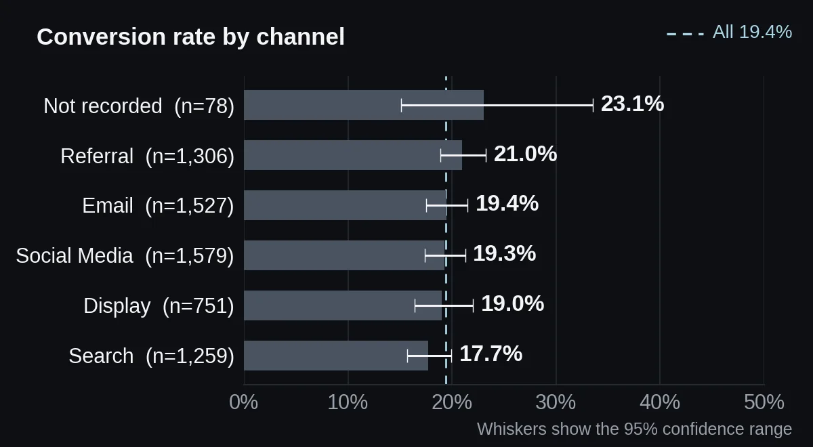
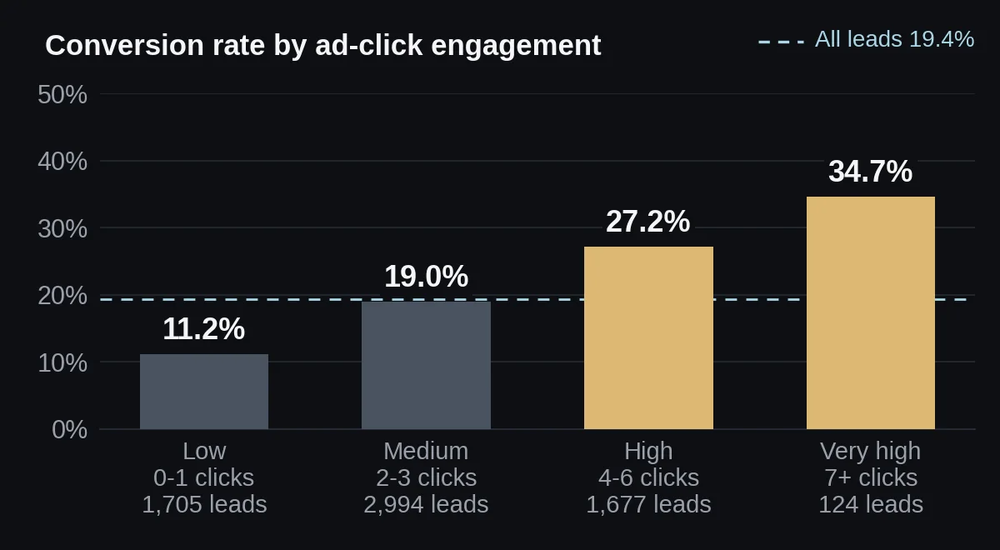

Marketing Campaign Performance Analysis
I compared conversion by channel, device and ad engagement, and checked whether spending more on a lead buys more conversions.
Summary
Do not move budget between channels on this data. Work on ad engagement instead.
Problem
The dataset covers 6,500 leads, 1.30M of ad spend, five channels and three device types. 19.4% of leads converted. Which channels and devices convert best, and is more ad spend linked to more conversions?
The files contain no brief, so the questions come from the notebook's own insight list: compare channel conversion before reallocating budget, find high-engagement segments, compare devices, and track cost per conversion.
Data
- Source
- TODO for Moaz: say where this dataset comes from; the notebook does not say
- Size
- 6,600 rows and 10 columns. 6,500 unique leads remain after removing 100 duplicate rows.
- Columns
- Lead_ID, Channel, Age, Monthly_Income, Website_Visits, Ad_Clicks, Ad_Spend, Previous_Purchases, Device, Converted (1 = converted, 0 = did not)
- Quality problems
- Before cleaning: 78 missing channels, 65 missing incomes and 69 missing devices. 32 ages fall outside 18 to 100 (from −5 to 120), and 20 ad spend values are negative.
- Definitions
- TODO for Moaz: explain what Ad_Spend measures (per lead or per campaign) and what counts as a conversion, over what period; the files do not say
- Currency
- TODO for Moaz: state the currency of Ad_Spend and Monthly_Income; the files give none
Method
- Removed 100 duplicate rows, standardised the text in Channel and Device, and filled missing values with "Unknown" (78 channels and 65 devices).
- Replaced 30 invalid ages, 65 missing incomes and 20 negative spend values with the column median.
- Grouped leads by ad clicks into four engagement levels: low (0 to 1 clicks), medium (2 to 3), high (4 to 6) and very high (7 or more).
- Compared conversion by channel, device and engagement. Calculated conversion rate, total spend, and cost per conversion (total spend divided by conversions).
- Tested whether leads that converted received different ad spend, using Welch's t-test, the notebook's test.
- Added checks the notebook does not contain: chi-square tests for channel, device, engagement and previous purchases, and 95% confidence ranges for each channel.
What I found
Channels and devices sit within noise
Referral converts best (21.0%) and Search worst (17.7%), a gap of 3.3 points. But each channel's 95% confidence range overlaps the others, and the chi-square test cannot separate them (p = 0.40). Devices are closer still: 18.9% on mobile to 19.9% on desktop (p = 0.66). Cost per conversion follows the same pattern, from 951.06 (Referral) to 1,129.68 (Search), so I would not act on it.

More spend per lead does not buy conversions
Leads that converted received 197.00 of ad spend on average, against 201.16 for leads that did not. The difference is −4.16 (95% confidence interval −11.77 to 3.46; Welch's t-test, p = 0.28). There is no evidence that spend per lead changes the outcome. Spend does not buy clicks either: their correlation is 0.008.
Engagement is the signal
Conversion climbs with ad clicks: 11.2% for 0 to 1 clicks (1,705 leads), 19.0% for 2 to 3, 27.2% for 4 to 6, and 34.7% for 7 or more (124 leads). Chi-square p < 0.0001, V = 0.16, a moderate link. Cost per conversion falls from 1,769.58 at low engagement to 746.03 (high) and 574.73 (very high).
Average spend per lead is almost the same at every level (198.23 to 202.86), so 26.0% of all spend goes to leads who barely click. Previous purchases also link to conversion, but weakly: 14.9% for none to 22.6% for six (p = 0.0003, V = 0.06).

| Question | Result | Test | p-value | Verdict |
|---|---|---|---|---|
| Ad spend, converted vs not | 197.00 vs 201.16 | Welch t-test Notebook | p = 0.28 | Not significant |
| Channel | 17.7% to 21.0% | Chi-square Added | p = 0.40 | Not significant |
| Device | 18.9% to 19.9% | Chi-square Added | p = 0.66 | Not significant |
| Ad-click engagement | 11.2% to 34.7% | Chi-square Added | p < 0.0001 | Significant Moderate (V = 0.16) |
| Previous purchases, 0 to 6 | 14.9% to 22.6% | Chi-square Added | p = 0.0003 | Significant Weak (V = 0.06) |
Engagement is not proof. Clicks come from the lead, not from the budget. Leads who were already interested may click more and also convert more. The data shows the link. It does not show that raising clicks would raise conversion.
Small top group. Only 124 leads fall in the 7-or-more group, so 34.7% is a rough figure.
No-channel leads. 78 leads have no channel. Their 23.1% conversion has a wide 95% range (15.1% to 33.6%), so it says little.
A null result is a result. The notebook's one test found nothing. That is worth reporting, and it is why I do not recommend moving budget.
Recommendation
- Do not reallocate budget between channels or devices on this data. The gaps are within noise.
- Test ways to raise engagement. 26.0% of spend reaches the 1,705 leads with 0 to 1 clicks, and they cost 1,769.58 per conversion against 731.27 for leads with 4 or more clicks. Try creative or targeting changes as a controlled experiment.
- Track cost per conversion by engagement level, not only by channel.
What I would do next
- Run an A/B test on ad creative or targeting for low-engagement leads, to see whether raising clicks raises conversion.
- Fit a logistic regression with clicks, visits, previous purchases, channel and device together.
- Get dates, so I can look at trends and the lag between clicks and conversion.
- Split cost per conversion by channel and engagement together, once each group has enough leads.